Oakridge Product Suite
A store operations app I designed and built for the Oakridge Park team, plus a daily deployment for managers that builds itself.
It replaced printouts, whiteboards and paper copies that didn't update each other with one shared system. Associates use it on the store iPhones for product lookup, counts, consolidations, receiving and floor stock. Everything lands in one shared Google Sheet.
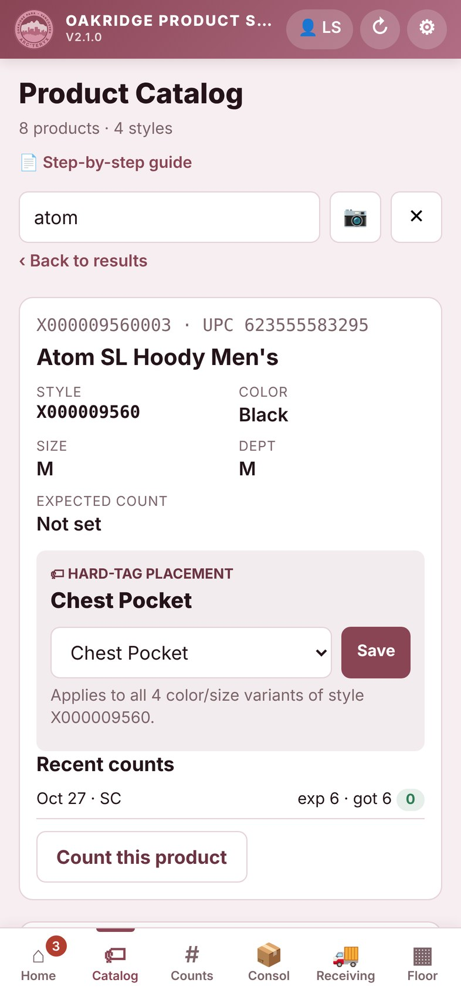
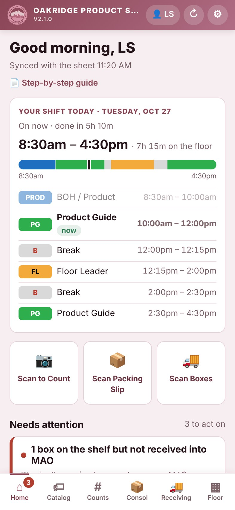
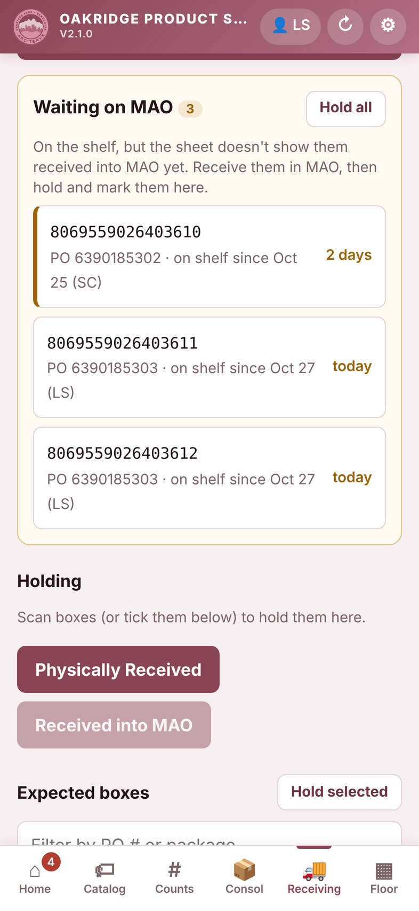
App screens show sample data. Staff names and sales figures in the Google Sheets screenshots are blurred.
One screen to start the shift
What’s yours today and what needs doing, without opening every tab.
- 1Your shift today: roles, breaks and a live “now” marker, read from the auto-built deployment
- 2One-tap scanning for the three most common jobs
- 3Needs attention: the app finds slipped work on its own
- 4Five focused modules replace seven tabs
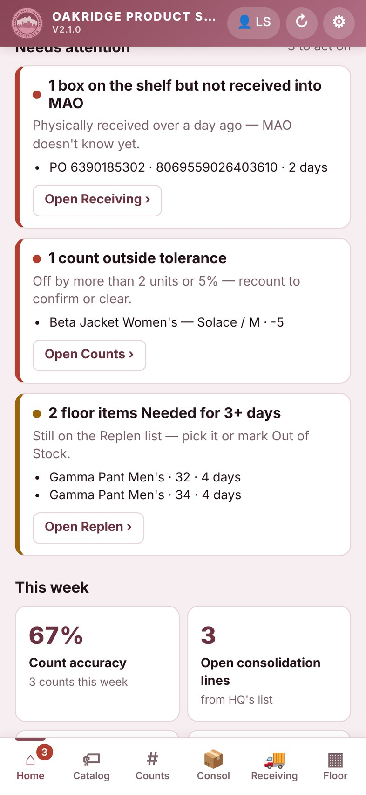
- 5Boxes on the shelf but not yet received in MAO, with how long they’ve waited
- 6Counts off by more than 2 units or 5%, flagged for a recount
- 7Weekly KPIs: count accuracy and open consolidation lines
Hard-tag placement everyone can find
Before: hard-tag printouts on a wall, with exceptions passed on by word of mouth. Now: one searchable source of truth.
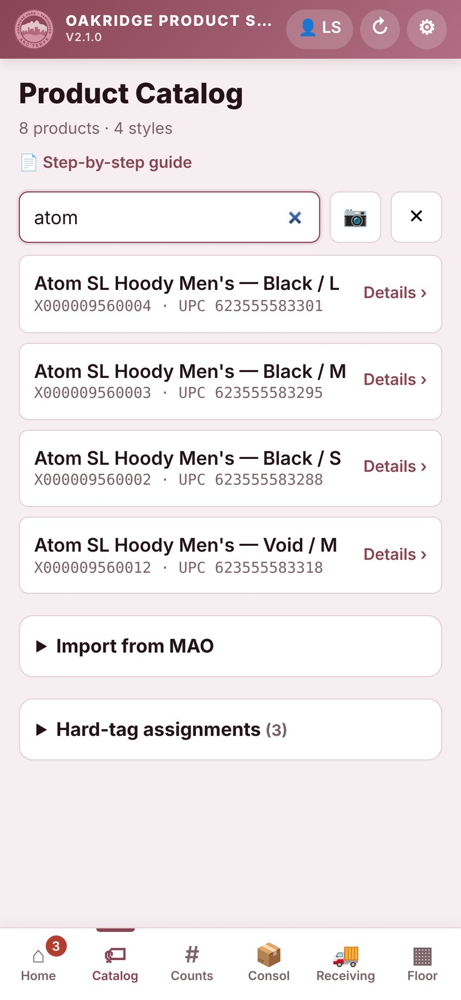
- 1One search for SKU, UPC, style or name, or scan the barcode
- 2Every colour and size, with its UPC, in one list
- 3Hard-tag placement: where the security tag goes, set once for the whole team
- 4Start a count straight from the product page
Every count logged and checked
Before: counts from memory or loose printouts, with no record of when an item was last checked. Now: every count timestamped, initialled and compared.
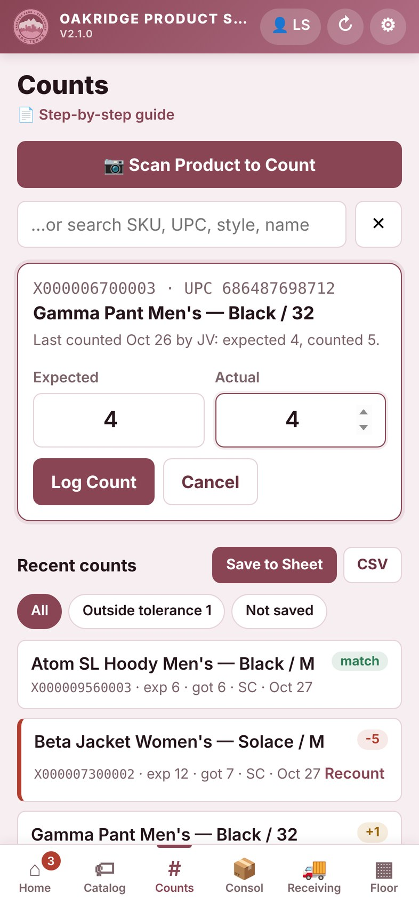
- 1Scan, then enter expected and actual. The last count is shown for context
- 2Counts save to the shared sheet in one batch
- 3Filter to counts outside tolerance or not yet saved
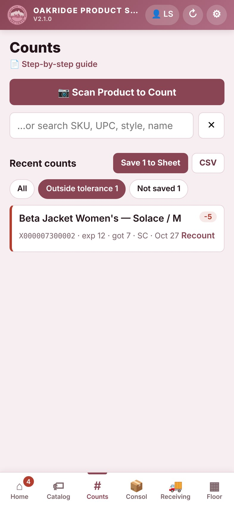
- 4Out-of-tolerance counts stand out and prompt a recount
One live list instead of three paper copies
Before: up to three paper copies that didn’t update each other, then re-checking. Now: one list everyone works from.
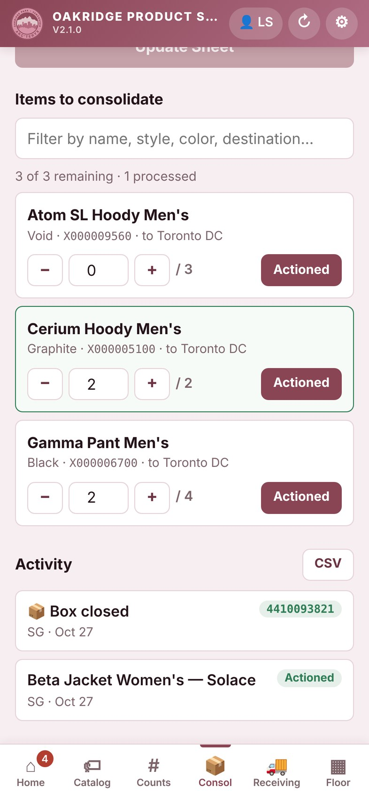
- 1Actual Count stepper for each item on HQ’s consolidation list
- 2Activity log: who closed which box, and when
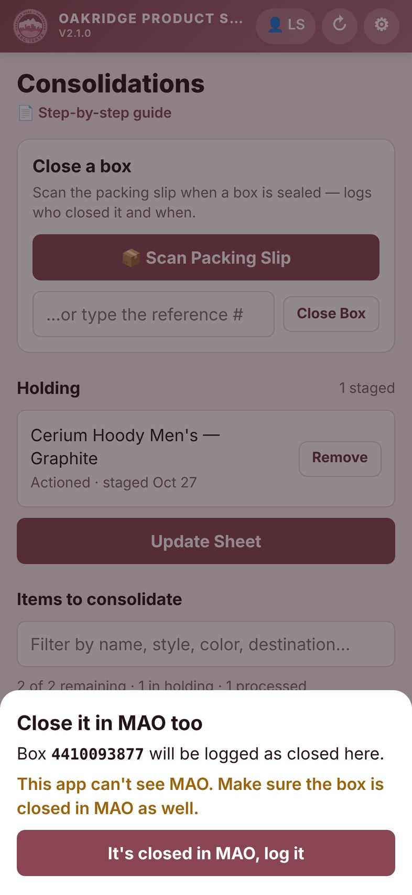
- 3Closing a box needs a confirm that it’s closed in MAO too, so the two systems never drift apart
Paste, scan, done In testing
Before: copy barcodes under PO numbers, photograph, scan, search, tick and initial, twice. Now: in a 5-box test, 1:06 with the app vs 3:25 by hand (not counting the MAO receive step).
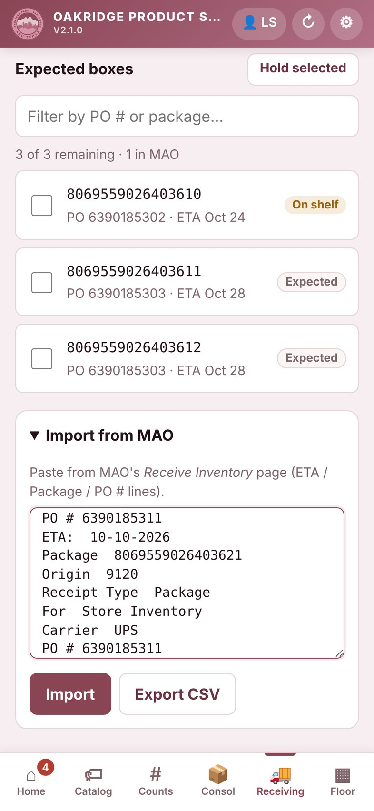
- 1Paste the shipment from MAO. Boxes and POs are read automatically
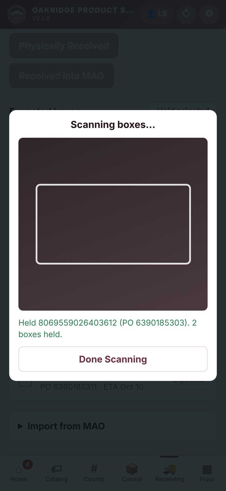
- 2Continuous camera scanning: each box label is matched to its PO
- 3Instant feedback on every scan
- 4Waiting on MAO: boxes on the shelf but not yet received in MAO
- 5Two-step handoff: Physically Received, then Received into MAO
From sold to restocked, tracked
Before: printouts and an 86 whiteboard that got wiped. Now: Check Floor, Replen and the 86 Board as one lifecycle.
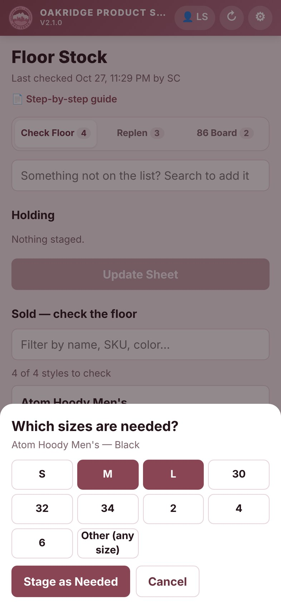
- 1Mark which sizes the floor needs for each sold style
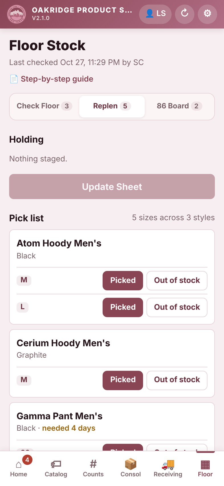
- 2Pick list grouped by style: Picked or Out of stock per size
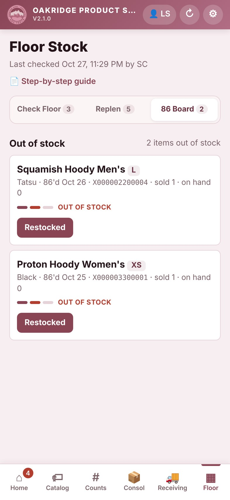
- 3Out of stock goes to the 86 Board until it’s restocked
A deployment that builds itself
For managers: the schedule, roles, breaks and an hourly sales tracker are built at 5am from When I Work. Leads can still edit anything by hand.
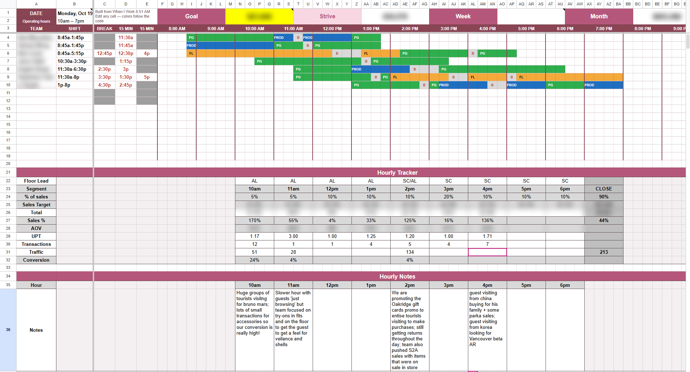
- 1Built automatically each morning from the When I Work schedule
- 2Goals: daily goal, Strive (1.4× goal), week and month
- 3Breaks placed by shift length, staggered so the floor stays covered. Grey means no break due
- 4Colour-coded roles in 15-minute blocks: Product Guide, BOH / Product, Floor Leader
- 5Hourly Tracker: targets split from the goal, sales filled in by pasting the MAO export. Sales %, AOV, UPT and conversion are calculated
- 6Hourly Notes in large boxes, one per hour
Edit the sheet, see it on the phone
Changes made on the sheet reach each associate’s “Your shift today” card within minutes.
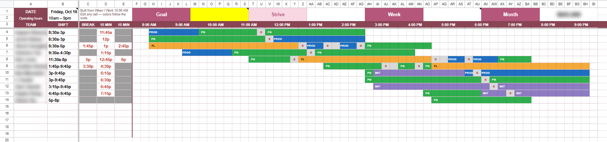
- 1Move a break by typing a new time or repainting the B cells. The other side updates to match
- 2Type a code and the block recolours. Touching blocks of the same role merge into one
How it’s built
- App: a plain-JavaScript progressive web app. Works offline, scans barcodes with the camera, installs to the home screen
- Backend: Google Apps Script on the store’s shared Google Sheet, protected by an access key
- Deployment: reads the When I Work schedule, places breaks under coverage rules and keeps hand edits in sync
- Rollout: ran side by side with the original app, then replaced it in place with no lost work